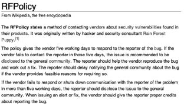

Bilgisayar sistemleri başından beri insanlığa hizmet ediyor. Gelişimin şimdiye oranla daha hızlı olduğu ve standartların yeni yeni oluşturulmaya başlandığı geçmiş yıllarda, bilgiye ulaşmak günümüzdeki kadar kolay değildi. Varoluş ve standartlaşma süreçlerindeki rekabet, yazılım ve donanım firmalarının, ürünlerinin teknik ayrıntılarını gizlemesine yol açıyordu. Bu bilgilerin gizlenmesi ise sektörün yol almasını önemli derecede yavaşlatıyordu. Bu dönemlerde birtakım insanlar bunun haksızlık olduğunu “bilgiye ulaşmanın” hiçbir zaman engellenmemesi gerektiği prensibini ilke edinerek, bilgisayar sistemleriyle ilgili rutin dışı çalışmalarda ve değişikliklerde bulundular. Sistem üzerindeki bir değişikliği akla gelmeyecek yöntemlerle yaparak işlerini kolaylaştırdılar. Bu, bugünlere kadar gelen “hacker” kelimesinin özünü oluşturdu. Elimizde proje ayrıntıları olmadığı halde bu sistemlerdeki zayıflıkları bularak yapılması gerekeni en kısa yoldan keşfedip yaparak bu felsefenin temellerini attık.
Sektörde, zamanla meydana gelen gelişmeler; bilgisayar dünyasındaki büyük gelişimle birlikte büyük güvenlik sorunlarını da beraberinde getirdi. Felsefenin yarattığı cazibe ile uygulamada alınan şaşırtıcı sonuçlar göz önüne alındığında “hacker” ve “hacking” kelimelerinin kapsamı genişlemeye başladı. İlk başlarda yazılımlardaki güvenlik açıkları ile programlama hataları yazılım ekibi tarafından tespit edilip kapatılırken, sonraları biz yayınladığımız “güvenlik duyuruları” ile bu gelişim sürecine aktif katkıda bulunmaya başladık.
Güvenlik duyuruları ürün ismi, güvenlik açığının kategorisi, teknik açıklamasıyla birlikte kimi zaman da istismar etmek için gerekli kodu içerir şekilde çeşitli güvenlik grupları ve hacker’lar tarafından yayınlanmaya başlandı.

Wikipedia. RFPolicy maddesi.
Bu durum bir yandan yazılım üreticilerini endişelendirirken bir yandan da yazılım ürünlerinin kalitesini arttırmaya yönelik birtakım faydalar sağlıyordu.
Neticede kısıtlı bir bütçe ve istihdamla yaratılan yazılım ürünlerinin biz bağımsız güvenlik geliştiricileri yani hacker’lar tarafından denenmesi, ürünlerin belli bir güvenlik standardını tutturmasına büyük katkıda bulunuyordu. Üreticiler yönünden olumsuz tarafı ise; söz konusu yazılımın kritik bir iş yapması durumunda, yayınlanan birkaç mühim güvenlik duyurusundan sonra yazılım firmasına ve ürüne olan güvenin sarsılmasıydı.
Bizim bu güvenlik açıklarını bularak yayınlamamız sonucunda herhangi bir maddi kâr elde etmediğimiz hesaba katıldığında; bunun kabul edilebilir bir kayıp olduğu düşünülebilir. Kendini ve ürünlerini garantiye almaya çalışan bazı firmalar, birtakım güvenlik geliştiricilerine ve güvenlik gruplarına bir öneriyle gittiler. Bu öneri, güvenlik duyurularının içerisinde açığı istismar etmek için gereken kodun olmaması, teknik ayrıntıların minimal düzeyde tutulması şeklindeydi. Ayrıca güvenlik açığının kapatılması süreci boyunca süresiz bir yayınlamama politikası da izlenecekti. Ben kabul etmesem bile bu şartlar ışığında güvenlik açığı bulup yayınlayan bazı güvenlik firmalarına yüklüce meblağlar ödenerek çok sayıda etik olmayan anlaşma yapıldı.
Bu fazlaca “işbirlikçi” (!) firmaların aksine asıl yapılması gereken bir güvenlik açığını tüm ayrıntılarıyla yayınlamaktı, yani Full Disclosure. Ünlü güvenlik uzmanı RFP’nin yazdığı bir dizi maddeden yola çıkarak, standartları belirleyen benim gibi çoğu hacker bu kurallar doğrultusunda güvenlik duyurularını yayınlayıp güvenlik sektörünün gelişimine reel katkılarda bulunmayı seçtiler.
Bu, bir nevi “imzasız anlaşma” kapsamında öncelikle hacker yazılım firmasıyla irtibat kurarak üründeki güvenlik açığıyla ilgili bildirimde bulunuyor. Bildirim sonrasında gelişen beş günlük sürede yazılım firması ürünle ilgili uyarı, yama yayınlamak için imkâna sahip oluyor. Böylece bu yazılımı kullanan kurumlar bu açıktan korunma imkânı yakalıyor. Bu süre içerisinde yama yayınlanmazsa veya cevap gelmezse hacker ikinci bir uyarı olmaksızın güvenlik duyurusunu yayınlıyor.
Yapılan tüm engellemelerle, danışıklı dövüşe rağmen biz Full Disclosure çerçevesinde güvenlik duyurularını yayımlayarak inandığımız amaca hizmet etmenin tadını çıkarıyoruz.
Herkes bizim geliştirdiğimiz bilgisayarlarla, yine bizim icat ettiğimiz internette dolaşıp, güvenli saydığı cennetini yaşıyor. Ama bilmeleri gereken onlara cehennem gibi gelen internetteki riskler kadar bu cenneti de bizlerin yarattığı.